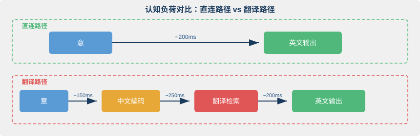
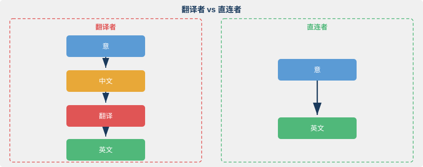
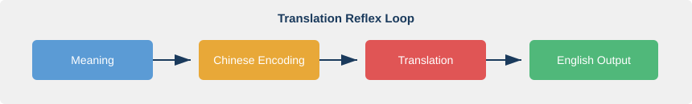
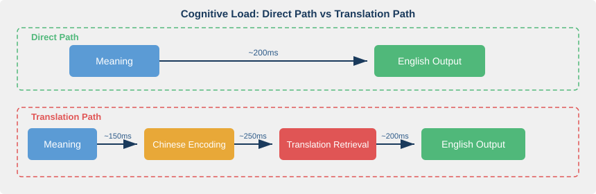
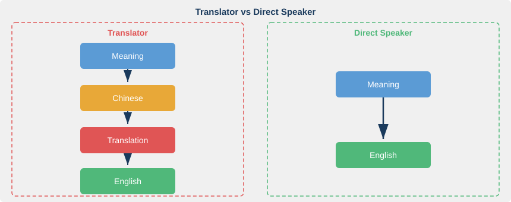

第一章：翻译的墙
The Translation Wall
"The limits of my language mean the limits of my world." — Ludwig Wittgenstein, Tractatus Logico-Philosophicus, 1921
核心问题：为什么"先想中文再翻译"是一条死胡同？
1.1 一次没能开口的会议
我在一家德国通信公司的上海研发中心工作过。有一次跨国电话会议，讨论的是一个项目的技术方向。我当时有一个关键判断：当前方案在信令时序上存在风险。
我听得很清楚，也知道该说什么。但我的大脑启动了一套熟悉的程序：先把观点组织成中文，再逐词翻译成英文。"信令时序"怎么说？signaling timing sequence？还是 signaling procedure timing？主语用 we 还是 the current design？
就在我打磨措辞的那几秒钟里，讨论滑向了下一个议题。我的观点被锁在了一个未曾开口的瞬间。
后来复盘，我意识到问题不是词汇量不够，也不是语法有漏洞。问题是每句话都要走一遍"中文→翻译→英文"的回路。这条回路本身就是一堵墙。
这种经历并不罕见。2023 年 5 月，纽约律师 Steven Schwartz 因为盲目依赖 ChatGPT 生成的法律引文，在联邦法庭提交了一份包含六个虚构判例的诉状。法官发现后，Schwartz 面临制裁。他的错误不在于使用工具，而在于把一个不可靠的中间环节当作了思考本身。翻译式英语的陷阱与此类似：你把"中文到英文的映射"当作了表达，而真正的表达从未发生。
1.2 翻译反射：一堵无形的墙
大多数中国英语学习者的大脑里，存在同一条默认回路。先在心里形成一个"意"(想说的内容)，把它编码为中文句子，再把中文句子翻译成英文，最后说出口。
我把这条回路叫做翻译反射(Translation Reflex)。它不是你有意选择的策略，而是上千小时"中翻英"练习固化而成的自动反应。
这条回路为什么效率极低？三个原因。
第一，它多了一个完整的中间步骤。你不是在"用英文表达"，你是在"翻译中文"。
第二，中文的语法框架会劫持英文输出。你说的不是英语，是披着英语外衣的中文。
第三，复杂度一上升，这个中间步骤就崩溃。简单寒暄能应付，一旦需要论证、反驳或者开玩笑，翻译回路直接过载。
这不是个人能力问题。这是一个认知架构(Cognitive Architecture)问题。Kroll 和 Stewart 在 1994 年提出的修正层级模型(Revised Hierarchical Model)揭示了背后的机制：初学者的 L2(第二语言)词汇无法直接连接概念系统，必须经由 L1(母语)词汇中介。学习初期，这是正常的拐杖。但如果从未有意识地打破它，拐杖会长成你认知架构的一部分。你会永远依赖中文来理解和生成英文。
1.3 认知负荷：翻译的隐性成本
你的大脑不是一台拥有无限内存的计算机。工作记忆(Working Memory)，也就是你在任意时刻能同时处理的信息量，是严格有限的。
Baddeley 的工作记忆模型将其拆分为三个子系统。语音环路(Phonological Loop)处理声音信息。视空间画板(Visuospatial Sketchpad)处理图像信息。中央执行器(Central Executive)负责调度和注意力分配。
翻译过程对工作记忆的抢占是灾难性的。走"意→中文→翻译→英文"回路时，工作记忆需要同时维持五条线程：你想表达的意、中文句子的结构、翻译过程中的词汇检索、英文语法规则的应用，以及对话语境的追踪。五条线程争抢同一块有限的认知带宽。
Sweller 的认知负荷理论(Cognitive Load Theory, 1988)精确地描述了这一现象。他区分了三种认知负荷：
- 内在负荷(Intrinsic Load)：任务本身的复杂度
- 外在负荷(Extraneous Load)：低效策略带来的额外负担
- 相关负荷(Germane Load)：用于真正学习的资源
翻译回路本质上是巨大的外在负荷。它不帮你把话说得更好，只是白白消耗认知资源。
所以"翻译式英语"听起来总是结结巴巴。说话者不是英语差，是大脑过载了。翻译过程吃掉了本该用于组织思路、选择措辞、把控节奏的认知空间。

上图的对比一目了然。直连路径只占用一段工作记忆，翻译路径占用三段。留给"思考说什么"的空间，后者远小于前者。
1.4 流畅性天花板：翻译能到达的极限
你可能会想：如果我翻译得足够快，是不是就能跟上了？
答案是否定的。翻译路径存在一个物理上限。无论你多熟练，多出来的中间步骤不会消失，只会缩短。
语言产出的时间窗口极其紧凑。母语者从产生说话意图到发出声音，大约需要 200-300 毫秒。对话中的话轮转换(Turn-taking)间隔平均仅 200 毫秒。这意味着你在对方说完之前就已经开始准备自己的回应了。而翻译路径至少需要 600 毫秒以上，因为它包含编码、检索和重新组装三个串行步骤。
400 毫秒的差距看似微小。但在真实对话中，它意味着你永远追不上自然的对话节奏。
Segalowitz 在《第二语言流畅性的认知基础》(Cognitive Bases of Second Language Fluency, 2010)中指出：流畅性(Fluency)的核心是自动化(Automaticity)。一个过程必须快到不需要有意识的注意力参与，才能称为自动化。翻译路径的根本问题在于，它包含一个需要有意识决策的步骤(从中文到英文的映射)。这个步骤永远无法完全自动化，因为两种语言的结构差异保证了映射过程的不确定性。
这就是流畅性天花板(Fluency Ceiling)。翻译得再快，你也翻不过这堵墙。你能做到的极限是"快速翻译者"，但永远成为不了"英语思考者"。
1.5 更深的代价：被中文框架囚禁的思维
翻译的代价不只是慢。更隐蔽的问题是：当你用中文框架组织英文表达时，你说出的英文被中文的思维结构扭曲了。
Slobin 在 1996 年提出了一个影响深远的概念，叫做"为说话而思考"(Thinking for Speaking)。他的核心论点是：不同语言迫使说话者在开口之前关注世界的不同方面。不是"语言决定思维"那么极端，而是"语言引导注意力"。当你准备用英文说话却先想中文时，你的注意力已经被中文框架引导了。
看几个具体的"框架冲突"。
主语省略 vs 主语强制。 中文是典型的主语省略语言。"昨天去超市买了点东西"，谁去的？不需要说。但英文强制要求主语：I went to the supermarket yesterday. 翻译式思维的人经常造出缺少主语的英文句子，或者用不恰当的被动语态来回避主语选择。
话题-评论 vs 主-谓-宾。 中文倾向于"话题-评论"结构。"这个东西，我昨天买的。"英文要求严格的"主-谓-宾"：I bought this yesterday. 不只是语序不同。信息组织的逻辑不同：中文先摆出话题再评论，英文先指定动作主体再描述行为。
时间靠语境 vs 时间靠时态。 中文用"了""过""将要"等助词和时间副词标记时间，语法上没有时态变化。英文用动词形态变化承载时间信息。翻译式思维者经常在时态上出错，不是因为不懂规则，而是因为中文思维根本没有为时态分配注意力。时态不在你的"出厂设置"里。
这些问题翻译技巧解决不了。它们是两套语言背后两种不同的认知框架在冲突。Sapir-Whorf 假说的温和版本，即语言相对论(Linguistic Relativity)，正好解释了这种现象：语言不决定你能想什么，但它深刻影响你习惯性地关注什么。当你始终在中文框架里组织思维再翻译成英文时，你的英文永远带着中文的"口音"。不是语音的口音，是思维的口音。
1.6 那些"学得好"的人做对了什么
并非所有人都被困在翻译的墙里。你身边一定见过这样的人：用英文发言时流畅自然，不像在翻译，更像在"想英文"。他们做对了什么？
答案不是他们翻译得更快。他们根本不翻译。
观察这些人的共同特征：通常有大量的英文沉浸经历。长期阅读英文原著，收听英文播客，在全英文环境中工作。但关键不在于"时间长"，而在于他们在这些经历中逐渐建立了一条直连通路(Direct Pathway)：意→英文。

在他们的大脑里，"apple"不再需要经过"苹果"才能连接到那个红色圆形水果的意象。"frustrated"不再需要经过"沮丧"才能连接到那种胸口发闷的感觉。英文词汇直接锚定在概念和体验上，就像你的中文一样。
这不是天赋。这是一种可以刻意构建的认知架构。怎么构建？这正是第二章和第三章要展开的核心内容。第二章将探讨"意"的本质，那个先于一切语言存在的心智表征层。第三章将详细拆解如何建立"意→英文"的直连通路。
1.7 语言实验：测量你的翻译依赖度
这不是考试，不需要"做对"。目的只有一个：觉察自己的思维过程。
实验方法： 阅读以下三个场景，用英文大声说出你的回应。同时注意观察：你的脑中是否先出现了中文？在哪个环节你感到最卡？
场景一： 同事问你 "How was your weekend?" 你是先想到中文"周末还不错"再翻译，还是直接蹦出英文？
场景二： 你需要解释为什么今天的会议应该推迟。 当理由变复杂时，中文是否开始介入？
场景三： 有人说了一个你不同意的观点，你需要礼貌地反驳。 组织反驳逻辑时，你在用哪种语言思考？
如果你在三个场景中都先想到了中文，不要焦虑。这恰恰证明你和大多数中国英语学习者一样，拥有一条根深蒂固的翻译回路。觉察到它，是改变的第一步。
1.8 总结与过渡
这一章揭示了翻译反射的三重代价：
- 认知负荷：翻译过程抢占工作记忆，挤压留给内容思考和表达组织的空间
- 流畅性天花板：翻译路径包含无法完全自动化的中间步骤，设定了流畅性的物理上限
- 思维框架囚禁：中文框架引导注意力关注不同的语言维度，翻译出的英文带着思维的"口音"
这不是在否定翻译的全部价值。在学习初期，母语中介是不可避免的认知拐杖。但如果你的目标是真正自如地使用英语，不只是通过考试，而是能在会议上实时参与讨论、能在邮件中自然表达观点、能在阅读时不需要"心里翻译"，那么翻译回路必须被超越。
问题来了：如果不经过中文，"意→英文"的直连路径究竟是什么样的？首先要回答一个更基本的问题。那个先于语言的"意"，到底是什么？
这就是第二章的主题。
参考文献
-
Kroll, J. F., & Stewart, E. (1994). Category interference in translation and picture naming: Evidence for asymmetric connections between bilingual memory representations. Journal of Memory and Language, 33(2), 149–174. DOI: 10.1006/jmla.1994.1008 — 提出修正层级模型，揭示双语者词汇-概念连接的不对称性：L2 词汇依赖 L1 中介访问概念系统。
-
Baddeley, A. D. (2000). The episodic buffer: A new component of working memory? Trends in Cognitive Sciences, 4(11), 417–423. DOI: 10.1016/S1364-6613(00)01538-2 — 工作记忆模型的更新版本，增加情景缓冲区组件，解释多模态信息的临时整合机制。
-
Segalowitz, N. (2010). Cognitive Bases of Second Language Fluency. Routledge. DOI: 10.4324/9780203851357 — 系统论述二语流畅性的认知基础，核心论点：自动化是流畅性的前提，而自动化需要直连的认知通路。
-
Slobin, D. I. (1996). From "thought and language" to "thinking for speaking." In J. J. Gumperz & S. C. Levinson (Eds.), Rethinking Linguistic Relativity (pp. 70–96). Cambridge University Press. — 提出"为说话而思考"框架，论证语言在线加工时对注意力分配的引导作用。
-
Sweller, J. (1988). Cognitive load during problem solving: Effects on learning. Cognitive Science, 12(2), 257–285. DOI: 10.1207/s15516709cog1202_4 — 认知负荷理论的奠基论文，区分内在负荷、外在负荷和相关负荷三个维度。
-
De Groot, A. M. B., & Kroll, J. F. (Eds.) (1997). Tutorials in Bilingualism: Psycholinguistic Perspectives. Lawrence Erlbaum Associates. — 双语心理语言学经典教材，覆盖词汇表征、翻译过程和双语记忆组织。
-
Mata-McMahon v. Avianca (2023). United States District Court, Southern District of New York, Case No. 22-cv-1461. — Steven Schwartz 律师因依赖 ChatGPT 生成虚构判例被制裁的联邦法庭案件。
Chapter 1: The Translation Wall
"The limits of my language mean the limits of my world." — Ludwig Wittgenstein, Tractatus Logico-Philosophicus, 1921
Core question: Why is "think in Chinese first, then translate" a dead end?
1.1 A Meeting Where I Never Spoke Up
I once worked at a German telecom company's R&D center in Shanghai. During a cross-border conference call about a project's technical direction, I had a critical observation: the current approach carried risks in signaling timing.
I could follow the discussion clearly. I knew what I wanted to say. But my brain launched a familiar routine: organize the point in Chinese first, then translate word by word into English. How do you say "信令时序"? Signaling timing sequence? Or signaling procedure timing? Should the subject be we or the current design?
In the few seconds I spent polishing my phrasing, the discussion moved on to the next topic. My point was locked in an unspoken moment.
Looking back, I realized the problem wasn't vocabulary or grammar. The problem was that every sentence had to travel the loop "Chinese → translate → English." That loop itself is a wall.
This kind of experience isn't rare. In May 2023, New York attorney Steven Schwartz submitted a brief to federal court containing six fabricated case citations, all generated by ChatGPT. After the judge discovered them, Schwartz faced sanctions. His mistake wasn't using a tool. It was treating an unreliable intermediary as a substitute for thinking itself. The trap of translation-style English works the same way: you treat the "Chinese-to-English mapping" as expression, while genuine expression never happens.
1.2 The Translation Reflex: An Invisible Wall
Inside the minds of most Chinese English learners, the same default loop runs. First, a yì (pre-linguistic meaning-intention) forms, the content you want to express. Then the brain encodes it as a Chinese sentence, translates that sentence into English, and finally pushes the words out.
I call this loop the Translation Reflex. It isn't a strategy you chose. It's an automatic reaction hardened by thousands of hours of Chinese-to-English practice.

Why is this loop so inefficient? Three reasons.
First, it adds a full intermediate step. You aren't "expressing in English." You're translating Chinese.
Second, Chinese grammatical structure hijacks your English output. What comes out isn't English but Chinese wearing an English costume.
Third, the intermediate step collapses as complexity rises. Small talk may survive the loop, but argumentation, rebuttal, or humor overloads it instantly.
This isn't a matter of personal ability. It's a cognitive architecture problem. Kroll and Stewart's Revised Hierarchical Model (1994) captures the mechanism: for beginners, L2 (second-language) words can't connect directly to the conceptual system. They must pass through L1 (first-language) mediation. In early learning, that's a normal crutch. But if you never consciously break the pattern, the crutch fuses into your cognitive architecture. You end up depending on Chinese to understand and produce English, permanently.
1.3 Cognitive Load: The Hidden Cost of Translation
Your brain is not a computer with unlimited memory. Working memory, the amount of information you can process at any given moment, is strictly limited.
Baddeley's working-memory model splits it into three subsystems. The phonological loop handles sound. The visuospatial sketchpad handles imagery. The central executive coordinates attention.
Translation devastates working memory. On the path "yì → Chinese → translate → English," your brain must juggle five threads at once: the yì you want to express, the structure of the Chinese sentence, lexical retrieval during translation, application of English grammar rules, and tracking of the conversational context. Five threads competing for the same finite cognitive bandwidth.
Sweller's Cognitive Load Theory (1988) describes this precisely. He distinguishes three types of cognitive load:
- Intrinsic load: the complexity of the task itself
- Extraneous load: extra burden from inefficient strategies
- Germane load: resources devoted to actual learning
The translation loop is essentially massive extraneous load. It doesn't improve your expression. It simply burns cognitive resources.
That's why "translation-style English" sounds halting. The speaker isn't weak in English; the brain is overloaded. Translation consumes the cognitive space that should go to organizing ideas, choosing words, and controlling rhythm.

The contrast is clear. The direct path occupies one segment of working memory; the translation path occupies three. Far less space remains for "thinking about what to say."
1.4 The Fluency Ceiling: Where Translation Hits Its Limit
You might wonder: if I translate fast enough, can I keep up?
No. The translation path has a physical ceiling. No matter how skilled you become, the extra intermediate steps don't vanish. They only get shorter.
The time window for language production is brutally tight. From intention to speech, native speakers need roughly 200 to 300 milliseconds. Turn-taking gaps in conversation average about 200 milliseconds, meaning you start preparing your response before the other person finishes. The translation path takes at least 600 milliseconds because it chains three serial steps: encoding, retrieval, and reassembly.
A 400-millisecond gap sounds small. In real conversation, it means you can never quite match the natural rhythm of dialogue.
Segalowitz, in Cognitive Bases of Second Language Fluency (2010), argues that the core of fluency is automaticity. A process must run fast enough to bypass conscious attention before it counts as automatic. The translation path's fundamental flaw is that it contains a step requiring conscious decision: mapping Chinese to English. That step can never be fully automated, because structural differences between the two languages guarantee uncertainty in the mapping.
This is the Fluency Ceiling. However fast you translate, you can't climb over this wall. At best you become a "fast translator." You never become an "English thinker."
1.5 A Deeper Cost: Thought Imprisoned by the Chinese Frame
Translation's cost goes beyond slowness. The more insidious problem: when you organize English expression within a Chinese frame, the English you produce gets distorted by Chinese thought structure.
Slobin (1996) proposed the influential concept of Thinking for Speaking. His core argument: different languages push speakers to attend to different aspects of the world before opening their mouths. Not "language determines thought" in the strong sense, but "language guides attention." When you prepare to speak English yet think first in Chinese, your attention has already been steered by the Chinese frame.
A few concrete "frame clashes":
Subject omission vs. mandatory subject. Chinese freely omits subjects. "昨天去超市买了点东西" (went to the supermarket yesterday, bought some things). Who went? No need to say. English requires a subject: I went to the supermarket yesterday. Translation-minded speakers often produce subject-less English, or reach for awkward passives to dodge choosing a subject.
Topic-comment vs. subject-verb-object. Chinese favors topic-comment structure: "这个东西，我昨天买的" (this thing, I bought it yesterday). English demands strict subject-verb-object: I bought this yesterday. The gap isn't just word order. It's information architecture: Chinese leads with the topic then comments; English names the agent first then describes the action.
Time by context vs. time by tense. Chinese marks time with particles ("了," "过") and adverbs ("将要"). There is no grammatical tense. English encodes time through verb inflection. Translation-minded speakers often stumble on tense not because they don't know the rules, but because Chinese thinking doesn't allocate attention to tense. It simply isn't part of the default setup.
These problems can't be fixed by better translation technique. They are collisions between two cognitive frames powering two language systems. The mild version of the Sapir-Whorf hypothesis, linguistic relativity, explains this well: language doesn't determine what you can think, but it deeply shapes what you habitually notice. When you always organize thought in a Chinese frame and then translate into English, your English carries a permanent Chinese "accent." Not an accent of pronunciation, but of thought.
1.6 What Those Who "Learned Well" Got Right
Not everyone is trapped behind the translation wall. You've surely met people who speak English with a fluency that doesn't sound like translation. They seem to think in English. What did they get right?
They don't translate faster. They don't translate at all.
Look at what these people share: typically, extensive English immersion. Long-term reading of English originals, English podcasts, work in all-English environments. But the key isn't duration. Through those experiences, they gradually built a Direct Pathway: yì → English.

In their minds, "apple" no longer needs to pass through "苹果" to reach the image of a red, round fruit. "Frustrated" no longer needs to pass through "沮丧" to reach that tight-chested feeling. English words anchor directly to concepts and experiences, just as Chinese words do for you.
This isn't talent. It's a cognitive architecture that can be deliberately built. How? That's the core subject of Chapters 2 and 3. Chapter 2 explores the nature of yì, the pre-linguistic mental representation layer that exists before any language. Chapter 3 details how to construct the direct pathway from yì to English.
1.7 🔬 Language Experiment: Measuring Your Translation Dependence
This isn't a test. There's nothing to "get right." The sole purpose is to notice your own thought process.
Method: Read the three scenarios below and respond aloud in English. As you do, observe: does Chinese appear first in your mind? At which point do you feel most stuck?
Scenario 1: A colleague asks, "How was your weekend?" Did you first think "周末还不错" in Chinese and then translate, or did English come out directly?
Scenario 2: You need to explain why today's meeting should be postponed. As your reasons grow more complex, does Chinese start to intervene?
Scenario 3: Someone states a view you disagree with. You need to politely push back. When organizing your rebuttal, which language are you thinking in?
If Chinese came first in all three scenarios, don't worry. That simply confirms you have a deeply entrenched translation loop, just like most Chinese learners of English. Noticing it is the first step toward change.
1.8 Summary and Transition
This chapter has exposed three costs of the Translation Reflex:
- Cognitive load: translation competes for working memory, squeezing the space available for content thinking and expression.
- Fluency ceiling: the translation path includes intermediate steps that can't be fully automated, imposing a physical upper limit on fluency.
- Imprisoned thought frame: the Chinese frame guides attention to different linguistic dimensions, so translated English carries a cognitive "accent."
None of this denies translation's value entirely. In early learning, L1 mediation is an unavoidable cognitive crutch. But if your goal is genuine ease with English (not just passing exams, but joining meetings in real time, writing natural emails, reading without mental translation), the translation loop must be transcended.
The question follows: if we bypass Chinese, what does the direct path "yì → English" actually look like? First, we need to answer something more basic. What is that pre-linguistic yì, exactly?
That's the subject of Chapter 2.
References
-
Kroll, J. F., & Stewart, E. (1994). Category interference in translation and picture naming: Evidence for asymmetric connections between bilingual memory representations. Journal of Memory and Language, 33(2), 149–174. DOI: 10.1006/jmla.1994.1008. Introduces the Revised Hierarchical Model, revealing asymmetric lexical-concept connections in bilinguals: L2 words rely on L1 mediation to access the conceptual system.
-
Baddeley, A. D. (2000). The episodic buffer: A new component of working memory? Trends in Cognitive Sciences, 4(11), 417–423. DOI: 10.1016/S1364-6613(00)01538-2. Updated working-memory model adding the episodic buffer to explain temporary integration of multimodal information.
-
Segalowitz, N. (2010). Cognitive Bases of Second Language Fluency. Routledge. DOI: 10.4324/9780203851357. Systematic account of L2 fluency's cognitive foundations; core argument: automaticity is prerequisite for fluency, and automaticity requires direct cognitive pathways.
-
Slobin, D. I. (1996). From "thought and language" to "thinking for speaking." In J. J. Gumperz & S. C. Levinson (Eds.), Rethinking Linguistic Relativity (pp. 70–96). Cambridge University Press. Proposes the "thinking for speaking" framework, arguing that language guides attention allocation during online processing.
-
Sweller, J. (1988). Cognitive load during problem solving: Effects on learning. Cognitive Science, 12(2), 257–285. DOI: 10.1207/s15516709cog1202_4. Foundational paper of cognitive load theory, distinguishing intrinsic, extraneous, and germane load.
-
De Groot, A. M. B., & Kroll, J. F. (Eds.) (1997). Tutorials in Bilingualism: Psycholinguistic Perspectives. Lawrence Erlbaum Associates. Classic textbook on bilingual psycholinguistics, covering lexical representation, translation processes, and bilingual memory organization.
-
Mata-McMahon v. Avianca (2023). United States District Court, Southern District of New York, Case No. 22-cv-1461. Federal court case in which attorney Steven Schwartz was sanctioned for submitting fabricated case citations generated by ChatGPT.